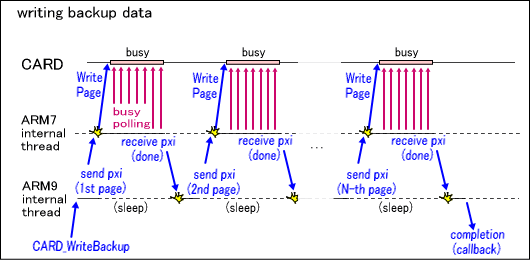

バックアップアクセス (overview)
説明
バックアップデバイスはDSカード内のSPIバスに接続され、IOレジスタを通してコマンドをシリアル通信することによって状態確認やデータ転送などの各種操作を行います。
用意されるコマンドの種類や制限はデバイス種別やサイズなどに依存しますが、一般的には共通して以下のような特徴があります。
- 固有のページサイズによってメモリ空間全体が区切られ、各ページごとに独立して書き込み回数の寿命を持ちます。
- 書き込みに関係するコマンドを発行すると完了するまでデバイスがビジー状態になります。
- 書き込み回数の蓄積に比例してビジー期間は徐々に長くなり、最終的には保証された規定範囲では決して完了しなくなります。
- 書き込み回数に依存しない、デバイス全体のデータ保持期間も存在します。
デバイス種別
現在CARDライブラリで対応している主なバックアップデバイス種別とその特性を以下に示します。
| デバイス種別 | 特性 |
| EEPROM | 標準的な特性の、比較的小容量なメモリ。 |
| FLASH | 比較的書き込みが遅く大容量なメモリ。
特に容量の大きなものはデータの書き換え処理が若干複雑になる。(後述) |
| FRAM | 書き込み回数の面で非常に優れている。また、セクタの概念が無く書き込み時のビジー期間も存在しない。 |
DSカードに搭載されているバックアップデバイスの種別を自動的に判断する手段は存在しませんので、
アプリケーションは自身が使用するデバイスタイプを明確に認識した上で、
全てのバックアップアクセス関数に先立ってCARD_IdentifyBackup関数で明示的に指定する必要があります。
特にDSダウンロードプレイなどでDSカード以外から起動したアプリケーションにおいては、
詳細の不確定なDSカードへ不用意にアクセスしてデータ破壊などの問題を生じることが無いよう、
必ずガイドラインに従ってROMヘッダ情報を事前に判定する必要がある点に注意してください。
そのような条件下ではCARDライブラリで自動的に制限が働き、CARD_Enable関数を呼び出さない限りアクセスできないようになります。
挿入されているDSカードのROMヘッダ情報はCARD_GetRomHeader関数で参照することができます。
前述の通り、デバイス種別ごとに使用可能なコマンドの種類や制限が異なります。特に、ある程度大容量なFLASHデバイスでは単純なデータ書き換えコマンドである"Write"操作を使用することができません。そのようなデバイスでは、セクタ単位でデータを消去する"EraseSector"操作と消去済み領域へデータを書き込む"Program"操作を組み合わせて同様の処理を実現する必要があるという点に注意してください。
以下に、現在サポートされているデバイスとおおよその動作特性をまとめます。
| デバイス種別 | EEPROM | FRAM | FLASH |
| サイズ | 4kb | 64kb | 512kb | 256kb | 2Mb | 4Mb | 8Mb | 16Mb | 64Mb |
| ページサイズ | (容量全体) | (容量全体) | 256B |
| セクタサイズ | (容量全体) | (容量全体) | 65536B |
| Write (消去不要な直接書き換え操作) | ○ | ○ | ○ | × |
| Program (消去後の書き込み操作) | × | × | ○ |
| EraseSector (セクタ消去操作) | × | × | ○ |
アクセス関数の処理の流れ
バックアップアクセス関数を呼び出してからの処理の流れについて説明します。

- データ転送に関係するほとんどのデバイスコマンドはページやセクタなどの固有サイズに制限を受けるため、
CARDライブラリはユーザから指定された内容を適切なサイズの複数個のコマンドへ自動的に分割します。
- 分割された個々のコマンドを順に発行します。コマンド発行とその後のビジー判定には終始CPUの直接処理を要するため、
この処理はARM7コンポーネント側の比較的低優先なスレッドで実行されます。
ARM9からはPXIを経由して1回ずつコマンド発行要求を通知します。
- ARM7コンポーネントでコマンドが完了すると、同じくPXIを経由して結果がARM9へ通知されます。
- 分割された残りのコマンドがあればこの場で再びARM9からコマンド発行要求を通知します。
処理全体が完了するか失敗するか、あるいはCARD_CancelBackupAsync
関数で中止されるまでこれを繰り返します。
ここで行われる完了待ちと再発行要求の処理はメモリコピーなどで長い時間がかかる場合があるため、
PXI割り込みハンドラではなくCARDライブラリ内部のスレッドで実行されます。
- 処理が完了すると、指定されたコールバックが呼び出し元へ通知されます。処理の結果は
CARDResult型の列挙値として
CARD_GetResultCode関数で参照することができます。
参照
CARD関数一覧
履歴
2007/08/22 大容量FLASHに関する説明と特性表を追記
2006/01/11 初版